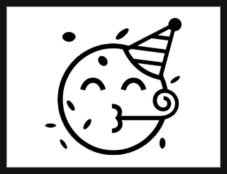

Dr. Liam D. Bailey
blog
dataviz
resume
Thoughts and ideas...
R
18 min read
Missing data
Dealing with NAs in a time-series
May 30, 2022
R
4 min read
Advent of Code 2021
Day 8
Dec 13, 2021
R
6 min read
Advent of Code 2021
Day 7
Dec 12, 2021
R
5 min read
Advent of Code 2021
Day 6
Dec 9, 2021
R
4 min read
Advent of Code 2021
Day 5
Dec 8, 2021
R
3 min read
Advent of Code 2021
Day 4
Dec 6, 2021
R
2 min read
Advent of Code 2021
Day 3
Dec 5, 2021
R
4 min read
Advent of Code 2021
Day 2
Dec 4, 2021
R
10 min read
Advent of Code 2021
Day 1
Dec 2, 2021
R
5 min read
R 4.1.0
All the newest features
May 20, 2021

R
32 min read
TidyTuesday - Week 11 (2021)
James Bond, the Bechdel test, and adding images to ggplot
Mar 24, 2021
R
13 min read
TidyTuesday - Week 9 (2021)
Tracking racial inequality using labour statistics
Feb 28, 2021
R
8 min read
Building maps using OpenStreetMap
Up your map game
Jan 25, 2021
R
13 min read
Making beautiful tables with the `gt` package
OR: How I learnt to stop worrying and love the table
Nov 27, 2020
No matching items